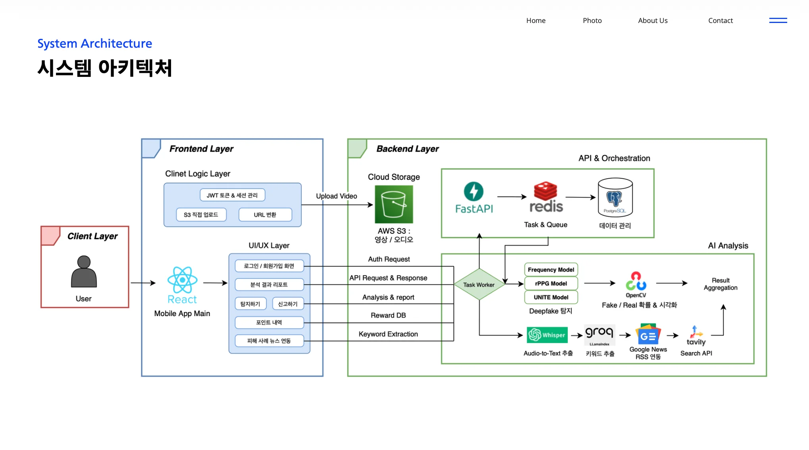
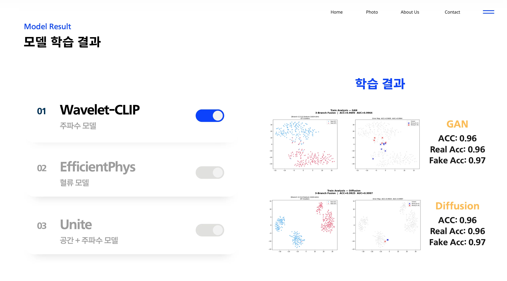

📌 프로젝트 목표
- 딥페이크 기술을 악용한 보이스피싱·가짜 광고·허위 정보 확산에 대응하기 위한 AI 기반 멀티모달 분석 시스템 구축
- 주파수 위조 흔적(Wavelet), 생체 신호(rPPG), 음성 발화 패턴(STT), 통합 Transformer(UNITE) 4중 멀티모달 분석으로 딥페이크 입체 판별
- 사용자의 자발적 신고를 포인트 리워드와 연결하는 선순환 디지털 생태계 구현
📌 핵심 기능
- 증거수집모드 (Fast): Wavelet + rPPG + STT 3중 병렬 분석 → PNG 시각화 리포트 자동 생성
- 정밀탐지모드 (Deep): UNITE Transformer 기반 고정밀 딥페이크 판별
- 비동기 처리 파이프라인: Taskiq + Redis Queue로 딥러닝 작업 큐잉, WebSocket 실시간 결과 알림
- 멀티 소스 지원: 기기 내 동영상 업로드 + YouTube/SNS URL 실시간 수집
- 리워드 시스템: 신고 건당 1,000P 지급, 4단계 등급 뱃지, Top 10 실시간 리더보드
📌 기술 스택

| 분류 | 기술 |
|---|---|
| AI/ML | PyTorch, ONNX Runtime, OpenAI Whisper, CLIP, InsightFace, OpenCV |
| Backend | FastAPI, Python 3.12, PostgreSQL, SQLModel, Alembic, Taskiq, Redis |
| Storage | AWS S3 (영상·프로필·리포트 이미지) |
| Frontend | React Native, Expo 0.81, TypeScript, Expo Router |
| Infra | WebSocket, ngrok, Redis Pub/Sub |
📌 My Main Contributions
1. Wavelet-CLIP 주파수 분석 모델 — 초기 구현 및 백엔드 통합
- CLIP 인코더와 Wavelet 변환을 결합한 주파수 위조 탐지 모델(
wavelet_lib) 초기 구현 - wavelet 모델 학습 최적화 (최종 학습 결과:
ACC=0.96, 일반화 성능 결과:AUC=0.84, ACC=0.71) p75 집계+TTA(Test-Time Augmentation)적용으로 분석 안정성 확보- FastAPI 백엔드의
DetectionPipeline에WaveletDetector클래스로 통합 - Wavelet 주파수 히스토그램 시각화 리포트(PNG) 생성 → AWS S3 업로드 연동

2. React Native 프론트엔드 — API 연동 및 핵심 기능 구현
- Google OAuth 로그인 / 아이디·비밀번호 찾기 / 회원탈퇴 구현
- 분석 결과 대시보드 API 연동 (
/analysis-result,/video/upload,/video/link) - YouTube URL 입력 → 서버 전송 흐름 (
link-paste.tsx) 구현 - WebSocket 토큰 인증 추가로 실시간 분석 진행 알림 수신
- AWS S3 프로필 이미지 업로드 API 연동 (
/account/profile) - 프론트엔드 API 스펙 정의서(
API_RESPONSE_SPEC.md) 작성으로 팀 협업 기준 수립
3. FastAPI 백엔드 — S3 통합 및 인프라 연동
- AWS S3 파일 업로드/다운로드 로직 구현 (프로필 이미지, 동영상 원본, 분석 리포트)
- YouTube
yt-dlp기반 외부 영상 수집 +cookies.txt인증 처리 - ngrok 터널 연동으로 외부 접속 주소 동적 할당 (FastAPI lifespan 내 관리)
4. UNITE 모델 인프라 및 STT 파이프라인 통합
- UNITE 딥페이크 탐지 모델을 Git 서브모듈로 추가 및 체크포인트 자동 다운로드 스크립트(
get_ckpt.sh) 작성 - PyTorch CUDA 128 버전 업그레이드 적용
- Whisper 기반 STT 파이프라인 초기 백엔드 통합
📌 문제 해결 경험
① UNITE 모델 결과값 반전 및 확률 계산 오류 수정
문제: UNITE 모델이 REAL/FAKE 판별 결과를 반대로 반환하고 확률값이 정상 범위를 벗어남
해결: softmax 출력 인덱스 매핑 오류 발견 → FAKE 확률 인덱스 수정 및 신뢰도 점수 계산 로직 재검토
결과: 모델 판별 정확도 정상화, 최종 데모 전날 배포 안정화 완료
② S3 / Redis 환경 설정 및 배포 연결 오류 해결
문제: 배포 환경에서 S3 URL, Redis URL, ngrok 브로커 연결 끊김 등 환경변수 기반 오류 반복 발생
해결: ngrok 터널이 FastAPI lifespan 외부에서 종료되는 문제 → lifespan 내 명시적 cleanup 로직 추가; Redis 브로커 타입 불일치 수정으로 Taskiq 워커 정상화
결과: 안정적인 비동기 파이프라인 구동 및 외부 접속 환경 구성 완료
③ 브랜치 병합 충돌 해결 및 협업 프로세스 정착
문제: 5인 동시 개발로 인해 main 브랜치 병합 충돌 이틀간 반복 발생
해결: 충돌 발생 지점(routers, schemas, models) 수동 병합; API 스펙 문서 선행 작성으로 인터페이스 기준 정렬; 역할별 모듈 분리로 파일 충돌 최소화
결과: 이후 충돌 빈도 감소 및 팀 협업 프로세스 개선
📌 프로젝트 성과
| 항목 | 수치 |
|---|---|
| 전체 커밋 수 | 255 commits |
| 본인 커밋 수 | 69 commits (기여도 27.1%) |
| 프로젝트 기간 | 22일 (2026.02.06 ~ 2026.02.27) |
| 팀 규모 | 5명 |
| AI 탐지 모델 | 4종 (Wavelet, rPPG, STT, UNITE) |
| 지원 소스 | 2종 (파일 업로드, YouTube/SNS URL) |
| 리워드 등급 | 4단계 뱃지 시스템 |
📌 마일스톤
Week 1 (02.06~13): 프로젝트 기반 구축
- 팀 전체: 백엔드 기본 구조(FastAPI, SQLModel, DB) 설계 및 UNITE 모델 마이그레이션
- 본인: 프로젝트 초기 커밋, Wavelet-CLIP 모델 및 프론트엔드 코드 초기 추가
- 본인: UNITE 서브모듈 추가 및 체크포인트 설정 스크립트 작성
Week 2 (02.14~21): AI 모델 통합 및 백엔드 API 개발
- 팀 전체: DB 테이블 설계(User/Video/Result/Reports), 인증(JWT/OAuth) 구현
- LegenDUST: 백엔드 구조 전면 개편(Taskiq 워커, WebSocket, Redis Pub/Sub)
- 본인: STT 백엔드 통합, API_RESPONSE_SPEC.md 작성, FastAPI main.py 갱신
Week 3 (02.22~27): 전체 통합, 배포, 버그 수정
- 곽재민: rPPG(EfficientPhys) 탐지기 및 시각화 코드 추가, YouTube 처리 파이프라인
- LegenDUST: WebSocket, Redis Pub/Sub 실시간 알림, 보고서 구조 완성
- 본인: AWS S3 통합, Google 로그인, YouTube URL, WebSocket 토큰, UNITE 결과값 오류 수정, ngrok 배포 안정화
- 본인: 프론트엔드 분석 결과/회원정보/탈퇴 API 전체 연동 완료